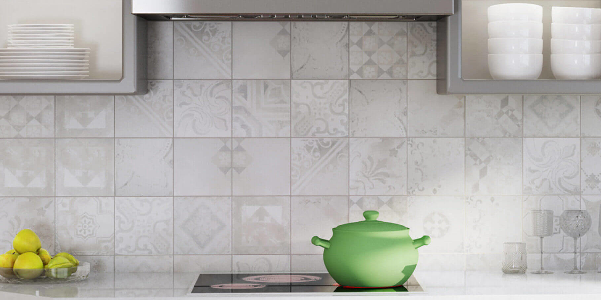

Carrelage petite sirène
Des carrelages uniques
Le carrelage petite sirène est un carrelage unique qui répond aux plus hauts standards de qualité. Antidérapant, durable et respectant les normes ISO, bénéficiez de nos 20 ans de savoir-faire pour le carrelage au travers de ce produit d’exception. De la préparation à la pose du carrelage, en passant par le nettoyage et l’entretien, nous serons là à chaque étape pour vous accompagner sur le long terme.